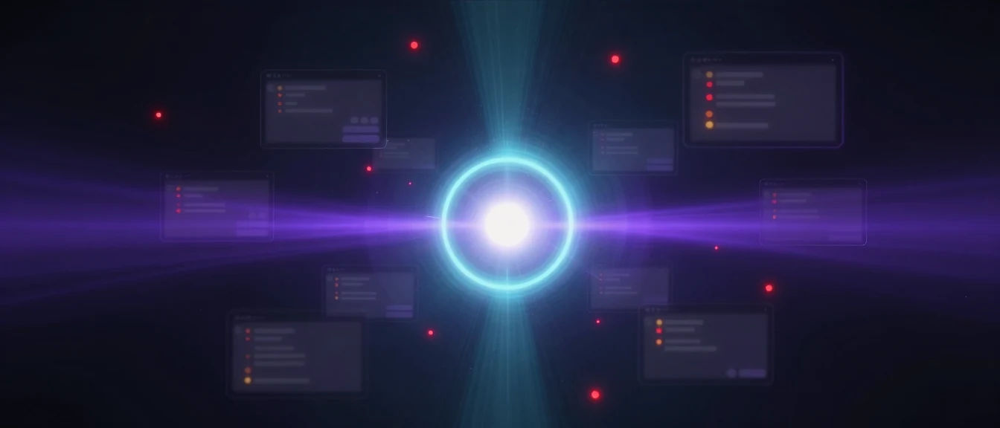
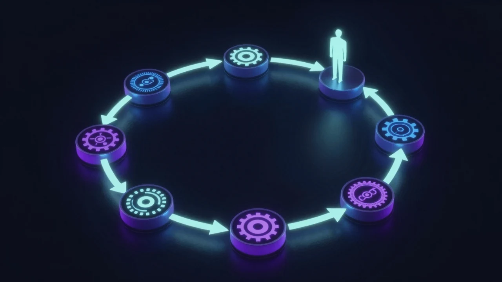
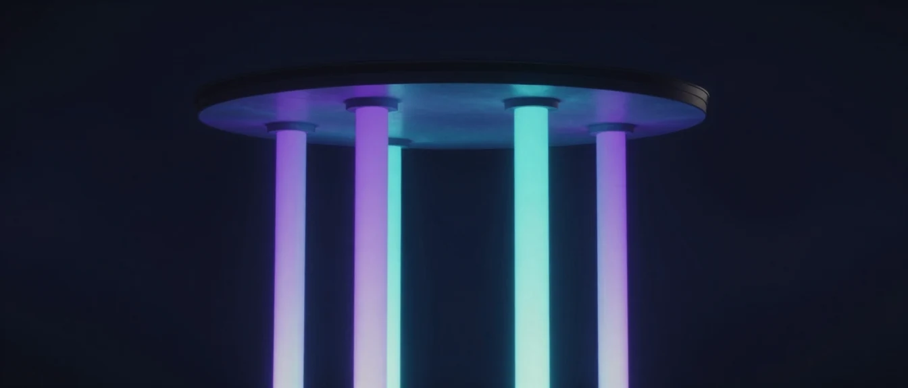
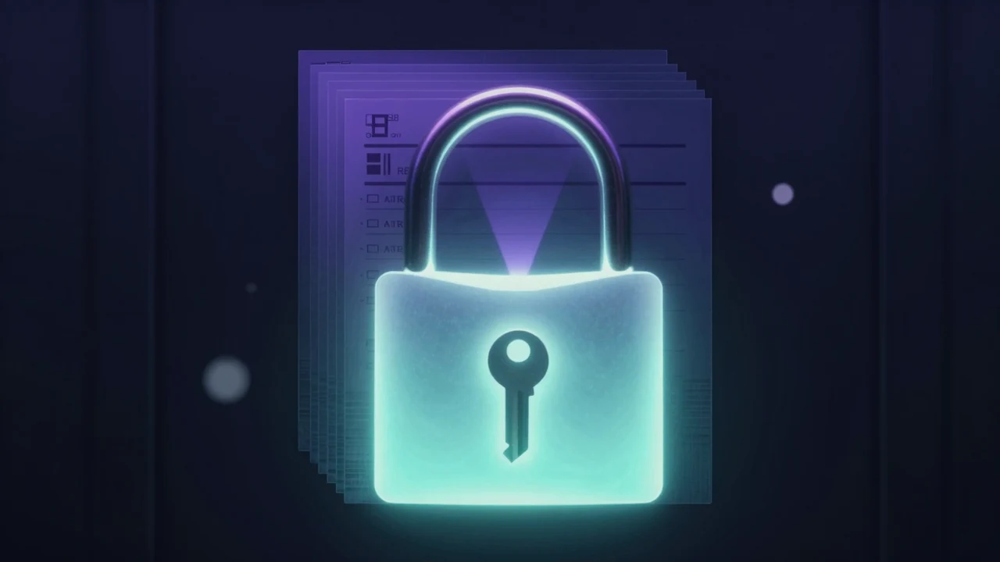
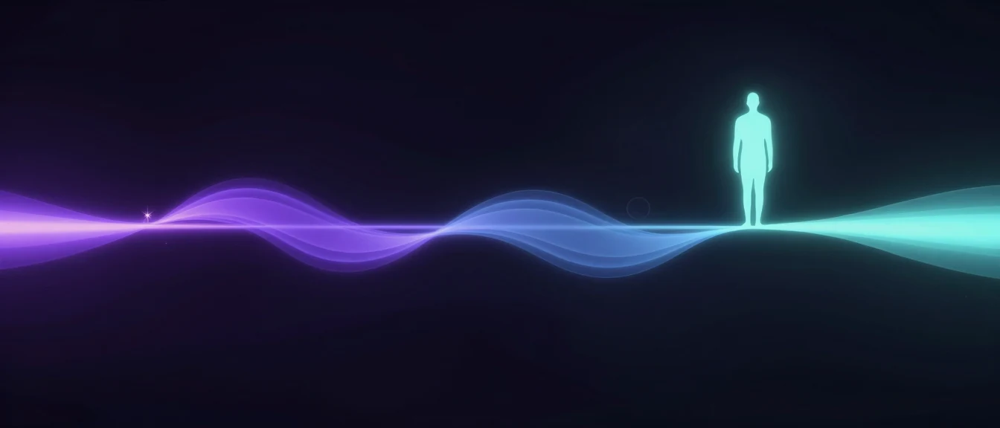
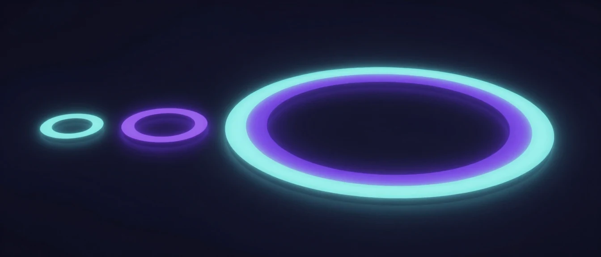

슬랙 채널의 오류를 AI가 상시 감지·분석하고, 관리자 승인 한 번으로 배포·검증·보고까지 끝냅니다.

현재의 장애 대응은 사람의 인지에 전적으로 의존합니다. 그 사이의 모든 공백이 곧 비용입니다.
'인지 → 전달 → 분석 → 결정 → 실행 → 공유'를 하나의 흐름으로 묶되, '결정'만 사람의 손에 남깁니다.

운영 안정성을 떠받치는 네 개의 축이 동시에 올라갑니다.
발생과 동시에 감지·수정안 준비
주말·새벽도 쉬지 않는 24/7
오류마다 같은 표준 절차
전 과정이 로그로 남음

신규 구축이 아니라, 이미 운영 중인 자산을 '잇는' 작업입니다.
약 80% 완성 — 감지·진단·수정·배포·슬랙연동은 보유. 남은 20%는 '연결'과 '승인 채널'.
속도를 얻으면서도 통제권을 잃지 않게 하는 거버넌스 장치입니다.

사람이 멈춰 있어도 루프는 흐르고, 필요한 순간에만 사람을 부릅니다.

속도는 자동화가, 책임 있는 판단은 사람이 맡습니다.

흩어진 대응을 하나의 루프로.
작은 파일럿 하나로 증명합니다.
상세 일정·범위·운영 정책은 요청 즉시 제공해 드리겠습니다.